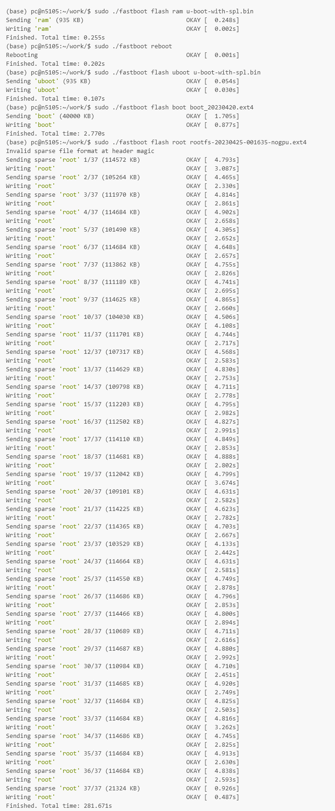

烧录镜像
更新历史
| 日期 | 版本 | 作者 | 更新内容 |
|---|---|---|---|
| 2023-05-08 | v1.0 | wonder |
|
准备工作
获取镜像
参见上一章“镜像集合”，选取需要的镜像下载。
以下的烧录方式以 Debian 镜像 LPi4A_Test_0425.7z 为例。
获取烧录工具
在镜像集合的网盘内可以获得 burn_tool.zip, 解压可得 win/linux/mac 三个系统下的 fastboot 烧录工具。
进入烧录模式
注意不同版本硬件进入烧录模式的方式略有不同，参见以下章节。
内测版硬件
按住板上的BOOT按键不放，然后插入 USB-C 线缆上电（线缆另一头接 PC ），即可进入 USB 烧录模式。

在 Windows 下使用设备管理器查看，会出现 “USB download gadget” 设备。
在 Linux 下，使用 lsusb 查看设备，会显示以下设备： ID 2345:7654 T-HEAD USB download gadget
正式版硬件
TODO
Windows 下驱动安装
Windows 下初次使用需要安装驱动，注意由于该驱动未经过数字签名，需要用户手工禁用数字签名。


烧录镜像
进入烧录模式后，可使用 burn_tool.zip 内的 fastboot 进行烧录操作，注意可能需要先赋予 fastboot 可执行权限。
以 linux 下为例：
在按住BOOT按键的条件下，系统在reset启动后，会默认进入fastboot模式，
这时侯我们可以通过fastboot下载并启动u-boot镜像的命令，来进入到u-boot的fastboot烧录模式（相比Brom阶段，会有更大下载buffer，速度会更快）
下面的指令会检查并格式化分区，请务必执行，否则后面烧录 rootfs 会很慢。
sudo ./fastboot flash ram ./images/u-boot-with-spl.bin
sudo ./fastboot reboot
sleep 1
分别烧录下面三个镜像：启动引导镜像-uboot，启动分区-boot，操作系统根分区-root
sudo ./fastboot flash uboot ./images/u-boot-with-spl.bin
sudo ./fastboot flash boot ./images/boot.ext4
sudo ./fastboot flash root ./images/rootfs.ext4
boot.ext4 为 boot 分区，包含以下内容：
fw_dynamic.bin #opensbi
Image #kernel image
kernel-release #commit id of kernel
light_aon_fpga.bin #fw for E902 aon
light_c906_audio.bin #fw for C906 audio
light-lpi4a.dtb #1.85GHz dtb
light-lpi4a_2Ghz.dtb #2GHz overclock dtb
light-lpi4a-ddr2G.dtb #history dtb
rootfs.ext4 为根文件系统，默认为 Debian 系统。
烧录镜像的典型 log 输出如下：

启动机制
brom -> uboot spl -> uboot -> opensbi -> kernel
TODO
批量烧录
如果你有商业需求，需要批量烧录固件，可以使用 sipeed 提供的 ARM/RV 版 fastboot 制作离线批量烧录器。
如果你需要烧录的数量很大，也可以直接联系 support@sipeed.com，我们提供预烧录镜像服务。